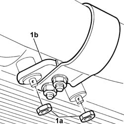
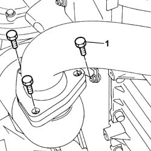
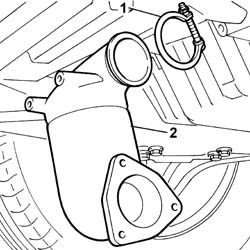
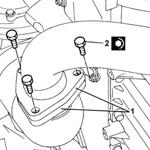

1080B40 CATALYTIC PRECONVERTER - R.R.
- Path
- Procedures > 10 ENGINE > 1080 EMISSION CONTROL SYSTEM > 1080B EXHAUST EMISSION CONTROL SYSTEM > 1080B40 CATALYTIC PRECONVERTER - R.R.
- Kind
- repair procedure (removal / refitting; the operation number is the code)
- Applies to
- engines: 2.4 JTD 20V; all production periods
- Interactive page
- https://sloeber94.github.io/elrnDB-lThss/en/#/851212
Applies to: engines: 2.4 JTD 20V; all production periods
 Removing
Removing
 Refitting
Refitting- Position the vehicle on a lift.
See in Op. 7055B54 PROTECTION/GUARD under engine - R.R.
1. Undo the nuts (1a) fixing the mounting bracket (1b) for the front section of the exhaust pipe.

Applies to: engines: 2.4 JTD 20V; all production periods
1. Undo the bolts fixing the front section of the exhaust pipe to the catalytic pre-converter.
- Lower the front section of the exhaust pipe and move it sideways.
- Keep the gasket for the front section of the exhaust pipe.

Applies to: engines: 2.4 JTD 20V; all production periods
1. Loosen the nut fixing the collar joining the pre-converter to the turbocharger.
2. Remove the catalytic preconverter.

Applies to: engines: 2.4 JTD 20V; all production periods
Refitting
Removing- Fit the catalytic pre-converter in the housing on the turbocharger.
1. Tighten the nut fixing the collar joining the pre-converter to the turbocharger to torque.
Applies to: engines: 2.4 JTD 20V; all production periods
1. Join the flange for the front section of the exhaust pipe to the flange for the catalytic pre-converter tightening the fixing bolts.
- It is advisable to fit a new seal between the two flanges during this operation.
2. Tighten the fixing bolts to torque.
 | Value - daNm | Fastening | Component | Ø |
|---|---|---|---|---|
. | (Preconverter) 2.8 | Bolts | EXHAUST PIPE TO ENGINE | - |

Applies to: engines: 2.4 JTD 20V; all production periods
- Tighten the nuts fixing the mounting bracket for the first section of the exhaust pipe to the oil sump.
See in Op. 7055B54 PROTECTION/GUARD under engine - R.R.
- Lower the lift and remove the vehicle from the lift.